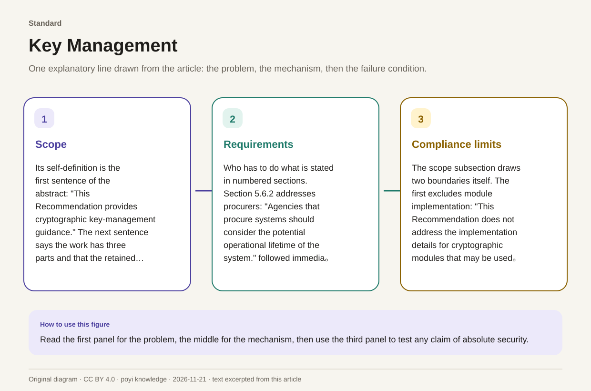
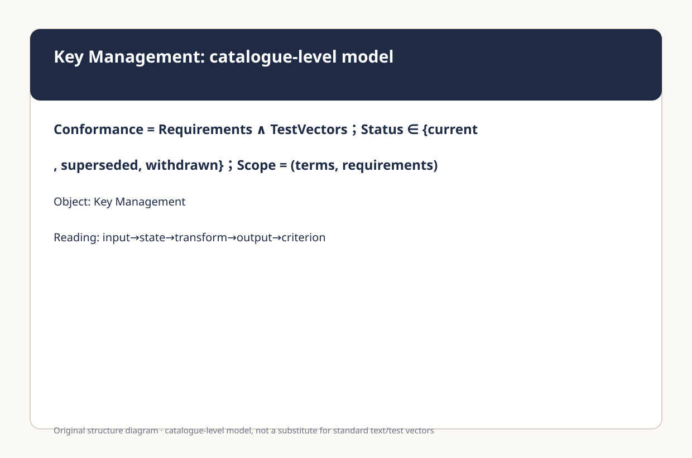

Principles
Standard: Key Management (密钥管理). Its self-definition is the first sentence of the abstract: "This Recommendation provides cryptographic key-management guidance." The next sentence says the work has three parts and that the retained file is Part 1: "Part 1 provides general guidance and best practices for the management of cryptographic keying material, including definitions of the security services that may be provided when using cryptography and the algorithms and key types that may be employed". The same abstract assigns the policy content elsewhere: "Part 2 provides guidance on policy and security planning requirements for U.S. government agencies." The first quotation names two of them — the security services cryptography can provide and the algorithms and key types that may be used — while the protection each kind of key needs is stated in the following sentences of the same abstract. The content is a framework, definitions and protection requirements, not an algorithm specification.

Why it matters
The risk statement opens the Executive Summary: "The proper management of cryptographic keys is essential to the effective use of cryptography for security." The same page gives the cost of choosing badly: "Inappropriate choices may result in an illusion of security but little or no real security for the protocol or application." Section 1.1 repeats that judgement and names the cause it sets out to handle: "Organizations and developers are presented with many new choices in their use of cryptographic mechanisms." Read together, the two sentences say that algorithm strength does not become system security unless key management holds, and that a bad choice buys an appearance of security.
Applications
Who has to do what is stated in numbered sections. Section 5.6.2 addresses procurers: "Agencies that procure systems should consider the potential operational lifetime of the system." followed immediately by a hard requirement: "The agencies shall either select algorithms and key sizes that are expected to be secure during the entire system lifetime or should ensure that the algorithms and key sizes can be easily updated." Section 6.1 puts the duty on the key information itself: "Confidentiality protection shall be provided for all secret key information" and "Integrity protection shall be provided for all key information." The wording levels split inside a single sentence: considering the operational lifetime is a should, the first branch "The agencies shall either select algorithms and key sizes that are expected to be secure during the entire system lifetime" is a shall, and the second branch "or should ensure that the algorithms and key sizes can be easily updated" falls back to should; both §6.1 protections are shall-level.

Limits & attacks
The scope subsection draws two boundaries itself. The first excludes module implementation: "This Recommendation does not address the implementation details for cryptographic modules that may be used to achieve the identified security requirements." The second excludes archive and backup operations: "This Recommendation does not address the requirements or procedures for operating a key archive or backup capability other than discussing the types of keying material that are appropriate to back up or include in an archive and the protection to be provided to that keying material." The same subsection states its complementary role: "This Recommendation supplements more focused standards and guidelines." The first exclusion is followed by the handover itself: "These details are addressed in FIPS 140". Taken together the limit is this: the text specifies what protection keying material should receive, not how a module is built and not the procedures for running an archive or backup.
History
The first two title-block lines read "NIST Special Publication 800-57 Part 1 Revision 5", the author line reads "Elaine Barker Computer Security Division Information Technology Laboratory", and the DOI line reads "This publication is available free of charge from:" followed by the DOI 10.6028/NIST.SP.800-57pt1r5. The acknowledgements record the predecessors whose work Revision 5 carries forward: "The National Institute of Standards and Technology (NIST) gratefully acknowledges and appreciates contributions by previous authors of this document on the many security issues associated with this Recommendation: William Barker, William Burr, and Timothy Polk from NIST; Miles Smid from Orion Security; and Lydia Zieglar from the National Security Agency." These are front-matter facts taken from the file itself: the part and revision number, the author and division, the free-access DOI line, and the named predecessors, which show that Revision 5 was rewritten on the work of the earlier authors.
Worked example & verification
Formal model and reproduction steps
[S=\min_i S_i,\quad S_i\in{\text{密钥强度},\text{分组安全},\text{实现安全}}]
Key Management: the registered public parameters, key material or randomness, and message are mapped through the stated transformation to an output checked against the registered criterion. The worked example is a structural reproduction, not a new test vector; parameter ranges, standard versions and implementation details remain source-bound.
References
- Wikipedia search entry for 密钥管理. https://zh.wikipedia.org/w/index.php?search=%E5%AF%86%E9%92%A5%E7%AE%A1%E7%90%86
- Handbook of Applied Cryptography (Menezes, van Oorschot, Vanstone). https://www.cacr.math.uwaterloo.ca/hac/